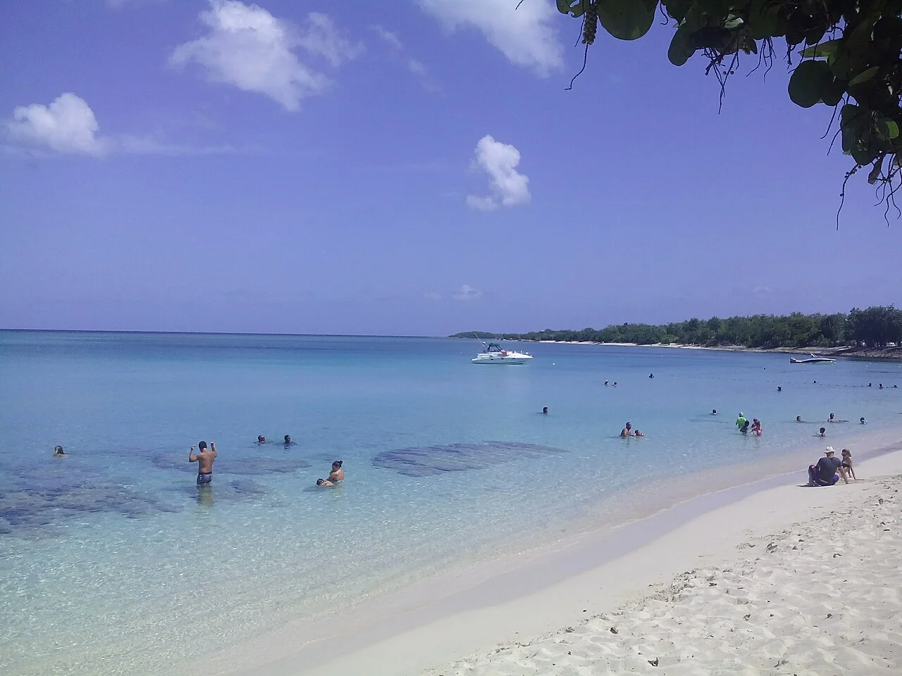

Plage du Souffleur — Port-Louis
Port-Louis, Grande-Terre, Guadeloupe · surf, snorkeling, baignade

Plage de sable doré à Port-Louis, sur la côte nord-ouest de Grande-Terre, bordée de cocotiers et de raisiniers. Selon le Comité du tourisme des Îles de Guadeloupe, l’eau est calme et limpide, avec du snorkeling près des zones rocheuses (poissons tropicaux, oursins, coraux). Après une courte marche, un spot de surf prisé des surfeurs t’attend. Décembre et janvier tombent dans la saison sèche (de décembre à mai), avec une mer à 27 °C.
- Lieu
- Port-Louis, Grande-Terre, Guadeloupe
- Niveau
- Variable selon les conditions
- Activités
- surf, snorkeling, baignade
- Type d'eau
- Mer / océan
- Coordonnées
- 16.43, -61.54 (position approximative du secteur)
Dangers à connaître
- La plage n’est pas officiellement surveillée : sois vigilant, surtout hors des zones fréquentées ou par temps agité.
- Le snorkeling se fait près des zones rocheuses et le spot de surf est à une courte marche : regarde la mer avant d’entrer.
- Des sargasses s’échouent par moments en Guadeloupe : en mai 2026, la préfecture a lancé une veille sanitaire. Renseigne-toi avant de partir.
Le conseil d'Ocean Buddy
Baigne-toi dans les zones fréquentées, surtout par temps agité, et prends une crème solaire respectueuse des récifs.
Ouvrir dans Ocean Buddy Télécharger sur l'App Store
Source : Fiche Ocean Buddy · décembre 2026 · d’après le Comité du tourisme des Îles de Guadeloupe et L’Info Durable · à vérifier localement.